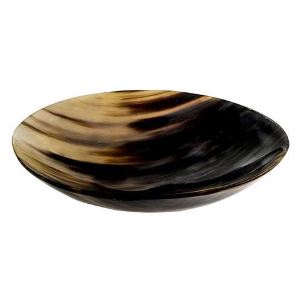
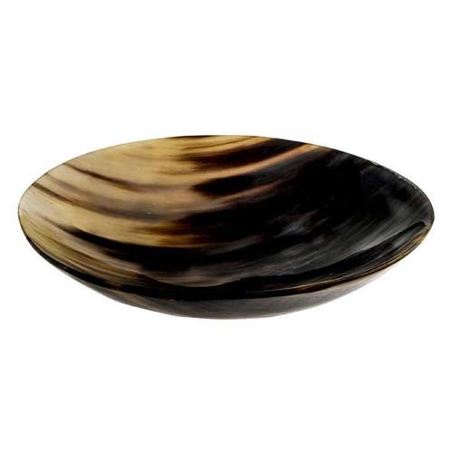
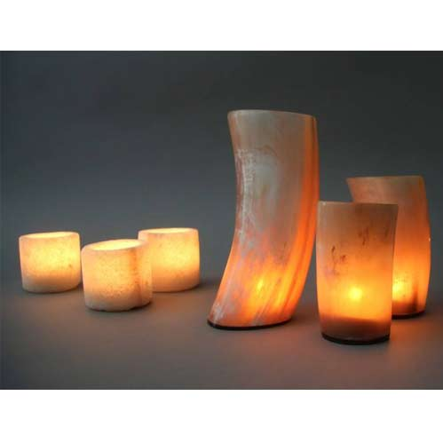
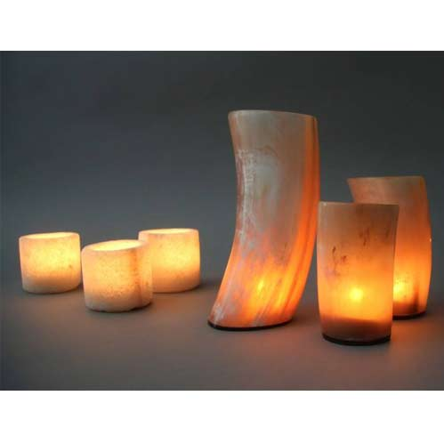
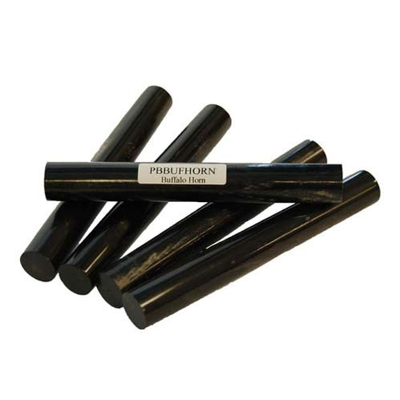
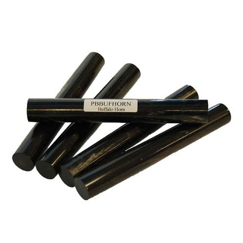

 

 



Buffalo Horn Optical Plates / Scales
 The Moon Exports Manufacturing and Exporting Horn Plates of Buffalo/ox/cow in all natural color and various sizes.
The Moon Exports Manufacturing and Exporting Horn Plates of Buffalo/ox/cow in all natural color and various sizes.
These plates manufactured by high grade raw material and with Modern machineries. These plates are manufactured by highly skilled labor to get extremness in quality .
As Horn to be considered as strong material so now a days increasing demands of it.
Our Buffalo/Ox/Cow Horn Plate are widely used in making Knife Handle, Spectacle Frames, Horn Buttons, Horn Jewellery, Combs , Musical Guitar Parts, Floor Tiles etc.